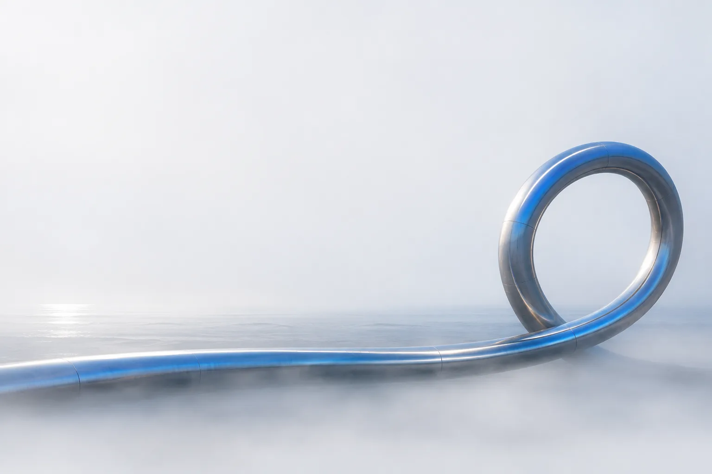

VibeCraft IO builds and runs software through all eight DevOps phases — IaC and automation carrying the work, with security kept in mind at every step.
Each phase feeds the next — from the first plan to the signals that shape what comes after monitor.
Requirements, architecture and a quick risk pass before a line of code.
Clean code with peer review, linting and good repo hygiene from day one.
Fast, reproducible CI with traceable artifacts.
Unit and integration tests running in the pipeline on every change.
Versioned releases with clean changelogs and change control.
Progressive delivery on infrastructure-as-code — boring by design.
SRE practices, on-call and incident response with real runbooks.
Metrics, logs and traces loop back into the next plan.
Product engineering inside a well-oiled delivery machine.
CI/CD pipelines, infrastructure-as-code and automation wired into how your teams already work.
Internal tools, bots and scripts that remove toil — with least privilege and secret hygiene built in.
Kubernetes, infrastructure-as-code and internal developer platforms that make the right way the easy way.
Cloud-native architecture, cost-aware design and environments that spin up on demand.
Web platforms, mobile apps and APIs — built inside the same secure loop, not outside it.
SLOs, monitoring, alerting and incident response — measure everything, page on what matters.
Four rules we don't negotiate on.
Least privilege, secret hygiene and sane defaults as we build — not a checklist at the end.
If it happens twice, it becomes a pipeline step. Humans review; robots repeat.
DORA metrics, SLOs and honest dashboards — decisions from data, not vibes.
We build on open source and give experiments back through VibeCraft Labs.
The company ships the loop. The lab plays with what's next.
VibeCraft IO is on GitHub, and VibeCraft Labs is where open experiments take shape.